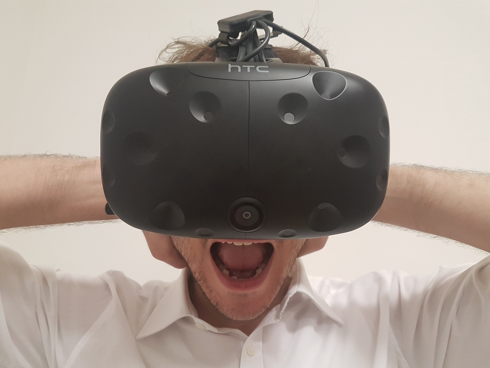

AR & VR, or Augmented Reality and Virtual Reality. Let’s start by indicating the differences between the two. Augmented Reality is the technology that makes it possible to augment reality through layering computer-generated enhancements atop an existing reality, whereas Virtual Reality is a computer-generated simulation or recreation of a reality or situation. Virtual Reality (hereafter VR) is more immersive than Augmented Reality (hereafter AR), whereas AR can make real life more convenient by implementing digital components into the real world.
Research
Using VR to treat anxiety
VR can be a very powerful tool when used the right way. Almost everyone is scared of something. Whether that’s heights (acrophobia; quite common), spiders (arachnophobia; also quite common), noisy eating or breathing (misophonia) or even peanut butter sticking to the roof of your mouth (yes, it’s a thing – arachibutyrophobia). Most of these fears or anxieties, except that last one, can be treated using VR. For example, a fear of flying can be treated by using a VR-headset along with a flight simulator. This makes the experience almost lifelike, whilst providing a much safer environment for the patient. If the patient can’t handle their anxiety at any point, the simulation can be stopped at any time, whereas a real-life plane can not in a second or two. It also feels much safer for the patient, as they know it’s just a simulation rather than the real deal.
AR in medical situations
One of the most powerful applications of AR I can think of is its use in hospitals and during medical procedures. For example, a surgeon could wear AR-enhanced glasses which provide them with all sorts of information about the patient’s organs and heartbeat, and can signal the surgeon if there are any complications. An application like this could also greatly reduce the amount of medical errors during procedures, as other surgeons can watch along and provide useful insights and tips.
Augmented Mona Lisa
What if you could use a tablet in a museum, which provides all kinds of extra information and facts about paintings, sculptures, antiquities and other art pieces? Using AR in museums and at exhibits can greatly enhance the guests’ experience and the overall informativity of a visit. Instead of reading the tiny signs displayed near paintings and sculptures which, on a side note, usually are circled by school kids on a field trip, all you’d have to do is point your tablet or smartphone at the piece you want information about. And just like that it pops onto your screen. You could even filter the information or search for something in particular. A much more enriching experience, I’d argue. One can explore museums and exhibits with a tour guide in the palm of their hand.
AR Pyromaniacs?
One particularly fun and also personally appealing AR application (I’m hungry), is a recent promotion from Burger King in Brazil. To promote their new Burger King Express service, a tool allowing users to pre-order their meals and avoid having to wait in line, Burger King Brazil motivated its app users to “Burn that Ad”. The feature was implemented into the existing Burger King app. Anyone who would launch the app and pointed their smartphone at one of BK’s main competitors’ ads, would enjoy the sight of that ad being burned (in AR), whereafter it’d be turned into a Burger King ad instead. Brilliant, right?! Once the flames extinguished, users were then treated to a free Whopper at the nearest Burger King restaurant.
That’s one hell of a way to battle your competitors. Well done, Burger King. So when exactly is this promotion coming to the Netherlands again?
Tinkering
I started tinkering by exploring the different options. In the workshop we'd already used both the Unreal Engine and A-Frame, which is why I decided to use other software to explore the possibilities of AR and VR technology. I read up on several development programs. One of those was Spark AR Studio by Facebook.
Face mapping in Spark AR
Spark is used for creating face filters for Facebook and Instagram, among other things. I wanted to try to make my own AR face filter, and as such made my first demo for AR: face mapping an eyepatch. Check the video on the left to see how I created the eyepatch filter in Spark AR!
Unity 2D demo
I soon found out Spark AR is a relatively little used program for AR and VR development. I read all kinds of things about 'Unity' and decided to dive into it. I soon found out that Unity is an incredibly extensive program. It can be used to create all kinds of games in 2D, 3D, AR and even VR! Because the program is so extensive, and frankly difficult to learn, I chose to start out with creating a very simple demo of a 2D game. In this demo, I learned to create a basic 2D game level with given assets, as well as animate the coins so they'd seem to be spinning around.
AR advertisement
Next, I wanted to learn how to use augmented reality for advertising purposes. Spark AR offered a tutorial for an interactive AR poster. The end result would be a dancing robot inside a poster, fully textured and with a 3D background! I followed the tutorial and recorded the process in this short clip.
Card trick
I then went back to Unity to see if instead of adding to a real-world object through AR, I could actually change its look or texture. Unity and Vuforia offer something called image targetting. This works as follows: you upload a certain image to Vuforia, so that it can be recognized. In Unity you then overlay another image and generate an app. That app lets you literally change the face of things. Anyone want to see a cool card trick?
Design and build
I am a big fan of anything Marvel, so I decided to use that interest for my AR experience. I have always been fascinated by the possibilities of especially AR. The field is developing ever so rapidly and I wanted to explore the possibilities of AR technology firsthand.
I chose to make a poster which uses AR tech to make more out of a flat image or regular movie poster. I worked with images, video and audio in this AR experience. You can see how I build the app in Unity using Vuforia, in the video on the right.
Showcase
Imagine waiting for the bus and seeing a movie poster ad in the bus shelter. Instead of having to look up a trailer or other information online, you can just simply grab your phone, aim it at the ad and voila! Live trailer, information and tickets link right there.
Users would need some kind of app on their phone to interact with the AR poster. Although, AR scanners and apps are getting more and more baseline. Think about the integrated QR-code scanner in most of the newer smartphones nowadays. Previously, one would need a separate app for that. In the (near) future, viewing AR might not depend on an app anymore!
Reflect
AR & VR: the topic and its future
This topic is most definitely my favorite. Not only because this field is really developing itself right now, but also because the applications in real-life are so very useful, especially AR. Besides the examples I gave earlier, there are tons more of technological modifications that can help us in real life. For example, I can imagine the Google Glass or something similar being developed even further, up to the point where everyone would be using it on a daily basis, just like the development of smartphones. I can’t wait to see what AR and VR applications we’ll have in the future!
My final product
Overall, I am satisfied with how the final product prototype turned out. I am glad I got it to work, as I am quite new to Unity and Vuforia. However, improvements can be made, in particular on the target tracking. For one, Cap(tain America) is somewhat shaky. That is probably due to the target tracking in Vuforia. The picture I uploaded got a bad rating, which means it can’t be tracked very well. All of the pictures were originally PNGs, so with a transparent background. Vuforia wouldn’t let me use those as target trackers though, so I had to give them a background. That made the poster look a bit more busy and, in my opinion, worse. If I were to make an AR poster again, I would look further into the possibility of using PNGs for target tracking, or if that turns out to not be possible after all, set up the poster differently to begin with.
Experience with AR & VR
I don’t have much experience with either AR or VR. For me, this was the first time working with the software I used for the demos. It was challenging to start using these advanced programs without any prior experience, but I managed by watching some basic tutorials up front. It’s challenging to get it all to function and display properly, and to find out how everything works, because these programs are so extensive.
As far as my personal experiences go; I’d like to try the Oculus Rift for VR gaming, as well as an AR interface for any product.